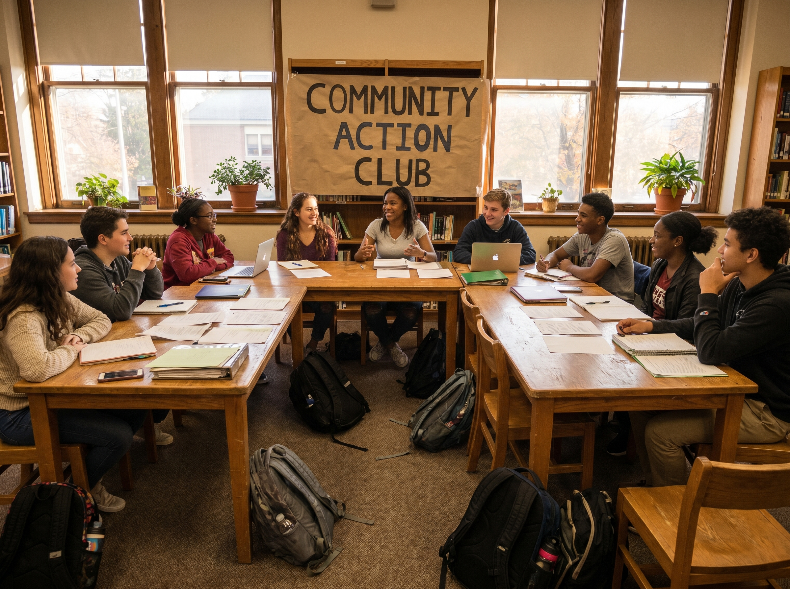

6 school clubs
YOUTH LEADERSHIP
K Clubs & Sponsored Youth Clubs
Kiwanis sponsors youth leadership and service clubs across Winchester-area schools. Our Key Clubs at Handley, James Wood, and Millbrook High Schools give teens the chance to lead real service projects, while our Builder's Clubs at Frederick County, James Wood, and Daniel Morgan Middle Schools introduce younger students to peer-led community service. We also support a Circle K chapter at the college level.